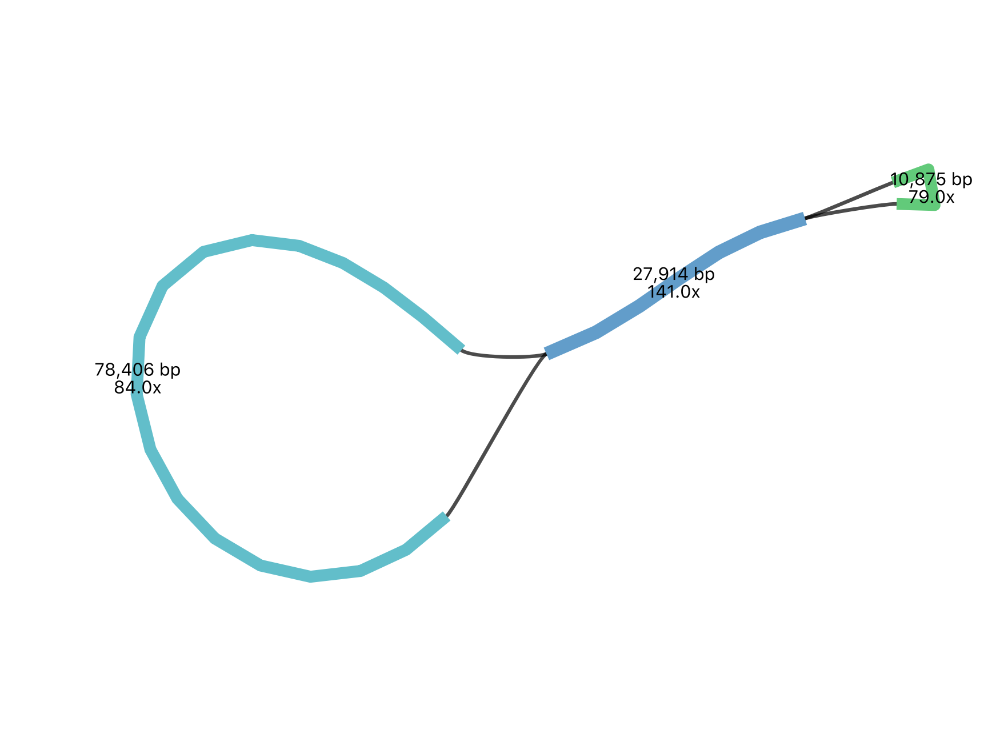

Assemble and annotate a chloroplast genome
What is genome assembly?
- Genome assembly is the process of joining together DNA sequencing fragments into longer pieces, ideally up to chromosome lengths.
- The DNA fragments are produced by DNA sequencing machines, and are called “reads”. These are in lengths of about 150 base pairs, to up to a million (or more) base pairs, depending on the sequencing technology used. Currently, most reads are from Illumina (short), PacBio (long) or Oxford Nanopore (long and extra-long).
- It is difficult to assemble plant genomes as they are often large (for example, 3,000,000,000 base pairs), have many repeat regions (such as transposons), and may be polyploid.
- This tutorial shows genome assembly for a smaller data set - the plant chloroplast genome - a circular chromosome about 160,000 base pairs long.
- The process shown here is applicable to assembling plant nuclear genomes but there would be extra steps (and much more time) involved. For example, additional sequencing would usually be run on 10X, BioNano or HiC to produce information to link up longer nuclear chromosome pieces and to separate out the maternal and paternal haplotypes.
Tutorial overview
- The chloroplast genome of the sweet potato has been sequenced.
- This has produced many sequencing reads - DNA fragments.
- We will try to join these reads together to make the whole chloroplast genome sequence.
- We will use the Galaxy Australia platform (a web page) to run our analysis.
- This tutorial assumes some familiarity with Galaxy and bioinformatics - if you are new to either of these, we recommend the Galaxy Australia Training tutorials Get started, Learn key tasks, Quality control, Genome assembly, and Genome annotation.
Import the data
- Log in to Galaxy Australia and create a new history.
- The data is from this paper: Zhou C, Duarte T, Silvestre R et al. 2018, hosted at EBI ENA.
- Original FASTQ reads: Illumina (SRR6828568) and Nanopore (SRR6828567).
- These data sets have been highly reduced in size for this tutorial.
- In a new browser tab, go to this webpage at this link.
- Find the file called
sweet-potato-chloroplast-illumina-reduced.fastq - Right click on file name: select “copy link address”
- In Galaxy, go to
Get Data and thenUpload File - Click
Paste/Fetch data - A box will appear: paste in link address
- Click
Start ; clickClose - The file will now appear in the top of your history panel.
- Repeat for the Nanopore reads
sweet-potato-chloroplast-nanopore-reduced.fastq . - We now have two FASTQ read files in our history.
- Click on the eye icon next to one of the FASTQ sequence files.
- View the file in the centre Galaxy panel.
Look at the read quality [to do]
- In the tool panel, search for Nanoplot
- [to do - run details] [to do - results] what does it mean, see sweet potato nanoplot - why is weighted histogram of read lengths have some that are in negative?/ eg NanoStats / average read length = 7000 / av quality = 10 / 2000 reads / 13 million bases
Assemble the nanopore reads
- In the tool panel, search for “flye”, and click on “Assembly of long and error-prone reads”.
- For
Input reads selectsweet-potato-chloroplast-nanopore-reduced.fastq - Leave other settings as default, except for
estimated genome size add160000 - Click
Execute
View assembly outputs
- There are five output files.
- View the
log file and scroll to the end. How many contigs were assembled? What is the length of the assembly? - View the
assembly_info file. What are the contig names? What does the “graph_path” show? - The assembly sequence is in the
scaffolds . Re-name thisflye-assembly.fasta - Optional: Download the
Graphical Fragment Assembly - Open the Bandage program (add link).
- Go to
File: load graph thenDraw graph - What is your interpretation of this assembly graph?  [to do - check the lengths of these graph contigs match the lengths in the flye output files] [to do - check the contig naming - note that it is changed in bandage?]
Map short reads to the aseembly
- Short illumina reads are more accurate the nanopore reads. We will use them to correct errors in the nanopore assembly.
- The first step is to map the reads to the assembly.
- In the tool panel, search for “bwa mem”, and click on “Map with BWA-MEM”
- For
Will you select a reference genome from your history selectUse a genome from history - For
Use the following dataset as the reference sequence selectflye-assembly.fasta - For
Algorithm for constructing the BWT index selectAuto. Let BWA decide - For
Single or Paired-end reads selectSingle - For
Select fastq dataset selectsweet-potato-chloroplast-illumina-reduced.fastq - For
Set read groups information? selectDo not set - For
Select analysis mode select1. Simple Illumina mode - Click
Execute - This maps the short reads to the assembly, and creates an alignment file.
- Re-name this file
illumina.bam
Polish the assembly
- In the tool panel, search for “pilon”, and click on “pilon”
- For
Source for reference genome used for BAM alignments selectUse a genome from history - For
Select a reference genome selectflye-assembly.fasta - For
Type automatically determined by pilon clickYes - For
Input BAM file selectillumina.bam - For
Variant calling mode selectNo - For
Create changes file selectYes - Click
Execute - This compares the short reads to the assembly, and creates a polished (corrected) assembly file.
- Re-name the fasta output file
polished.fasta - Find and run the tool called “Fasta statistics” on this file.
- How does it compare to the unpolished
flye-assembly.fasta ?
View read alignments
Get cutdown nano and illumina reads for viewing in bams
View all histories: see History: chloroplast-tutorial-data - drag sweet-potato-nanopore-tiny.fastq and sweet-potato-illumina-tiny.fastq click Analyze Data
Map tiny nano to polished.fasta with bwa-mem
bwa mem single reads analysis: nano mode => bam re-name as nanopore-tiny.bam
map tiny illumina to polished.fasta with bwa-mem
bwa mem single reads analysis: illumina mode => bam re-name as illumina-tiny.bam
JBrowse on polished.fasta and nano-bam and illumina-bam
ref = polished.fasta genetic code = 11
Insert Track Group
Insert Annotation Track Track type: BAM pileups BAM track data: nanopore-tiny.bam
Insert Annotation Track Track type: BAM pileups BAM track data: illumina-tiny.bam
=> JBrowse. re-name: e.g. view flye.fasta and seq reads
Two contigs in drop down. zoom all the way out zoom all the way in change ref seq display. see diffs bn long error nano reads and short low-error illumina reads
note that the coverage is quite uneven, but that these reads could have bias as they are those that mapped to a certain set of cp genomes. If this new genome has new bits, these may be in the long-read assembly but missing in short reads.
Why would the polished assembly (the ref track) be different to the reads - wouldn’t these snps correct these places? maybe would need another round+ of polishing.
Annotate
- Annotation is ....
download the polished.fasta https://chlorobox.mpimp-golm.mpg.de/geseq.html web: geseq: upload the fasta file. linear options: generate codon-based alignments Blat - default hmmer - tick emrbyophyta argaron tick tRNAscan - tick accept disclaimer submit: (5 mins): tutorial break
contigA: gff3: click on it: click download at the bottom contigB: repeat
click on ogdraw to look [Note: can see the repeated 16sRNA and 23sRNA – although one of sets only has fragments? not full length? – also, where does the Inverted Repeat start - is is ycf2?]
upload geseq.gff3 to galaxy
Get data choose local file x2, start, close
JBrowse: geseq.gff3 and polished.fasta
two contigs
re-name view polished.fasta annotations
[note: two gff tracks displayed under each but one will be empty under each.]
annotation: a constantly-improving process as more info for matching to seq string, seq structure, etc. can be multiple annotations under each feature depending on the database matched.
[option: repeat jbrowse, add the barrnap gff track to compare where that mapped the rRNAs - can see that the geseq annotation is slightly different]
Extension exercise: assemble the snow gum chloroplast genome
See this history in Galaxy
If you want to see this Galaxy history without performing the steps above:
- Log in to Galaxy Australia: https://usegalaxy.org.au/
- Go to
Shared Data - Click
Histories - Click
Completed-assembly-analysis - Click
Import (at the top right corner) - The analysis should now be showing as your current history.
See this workflow in Galaxy
What’s next?
You can find more tutorials at
Galaxy Australia Training
and
the Galaxy Training Network: